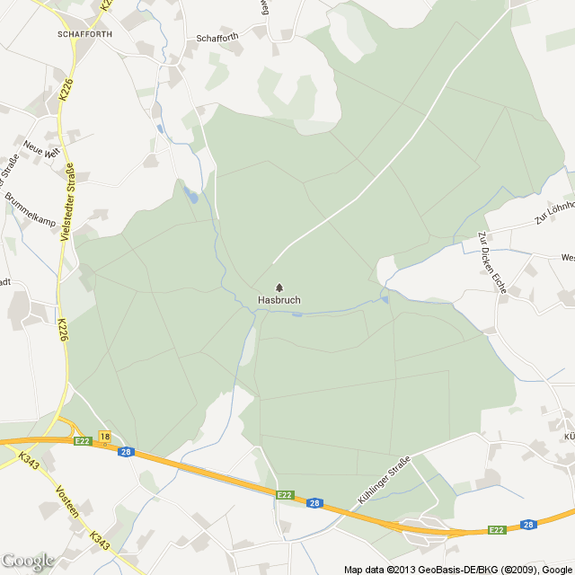

Seit über 1200 Jahren trotzt die Friederikeneiche im Urwald Hasbruch den Naturgewalten, sie ist die zweitälteste noch lebende Eiche der Bundesrepublik. Der Hasbruch zählt mit zu den wertvollsten Waldbeständen im norddeutschen Raum und steht unter Landschafts- und Naturschutz. In einem der größten Eichenreviere Norddeutschlands bieten uralte Eichen und Hainbuchen ein ideales Revier für viele Tiere und Pflanzen.
Ausflügler finden hier ruhige Erholung, Naturkundler vielfältigste Forschungsbereiche, Künstler und Literaten inspirierende Motive. Das 630 ha großes geschlossene Waldgebiet bietet sich für Spaziergänge und Wanderungen an. Es ist durch besandete, ebene Wege für Jung und Alt während des ganzen Jahres gut begehbar. Für Reiter wurde ein besonderer Rundweg angelegt.
Landschaftliche Vielfalt prägt den ökologischen Wert des Hasbruchs: Rings um den Wald sollen extensiv bewirtschaftete Wiesen und Weiden einen Puffergürtel bilden. Er stabilisiert den Waldlebensraum und verbessert die Artenvielfalt.
In das Waldgebiet kann von Hude aus über den Parkplatz "Am Forsthaus" in Vielstedt und über den Parkplatz "Schwarzes Heck" an der BAB Abfahrt Hude gestartet werden.
For over 1200 years the „Friederikeneiche“(an oak) in the forest Hasbruch has been defying the forces of nature, it is the second oldest living oak of the Federal Republic. The Hasbruch with one of the most valuable forest stands in northern Germany and counts as protected landscape. Hasbruch as one of the largest oak districts in northern Germany with ancient oaks and hornbeams, is an excellent spot for many animals and plants.
Sightseers will find relaxation, natural historians diverse areas of research, artists and writers inspiring motifs. The 630 hectares of closed forest area are ideal for walks and hikes. It is easy for all ages to walk through sanded, flat trails throughout the entire year. A special trail for riders has been created.
Landscape diversity characterizes the ecological value of Hasbruch: All around the forest are extensively managed meadows and pastures, forming a buffer belt. It stabilizes the forest habitat and improves biodiversity.
The forest area can be entered at the parking lot „Am Forsthaus“ in Vielstedt and the parking lot „Schwarzes Heck“,which is near the motorway exit of Hude.
Seit über 1200 Jahren trotzt die Friederikeneiche im Urwald Hasbruch den Naturgewalten, sie ist die zweitälteste noch lebende Eiche der Bundesrepublik. Der Hasbruch zählt mit zu den wertvollsten Waldbeständen im norddeutschen Raum und steht unter Landschafts- und Naturschutz. In einem der größten Eichenreviere Norddeutschlands bieten uralte Eichen und Hainbuchen ein ideales Revier für viele Tiere und Pflanzen.
Ausflügler finden hier ruhige Erholung, Naturkundler vielfältigste Forschungsbereiche, Künstler und Literaten inspirierende Motive. Das 630 ha großes geschlossene Waldgebiet bietet sich für Spaziergänge und Wanderungen an. Es ist durch besandete, ebene Wege für Jung und Alt während des ganzen Jahres gut begehbar. Für Reiter wurde ein besonderer Rundweg angelegt.
Landschaftliche Vielfalt prägt den ökologischen Wert des Hasbruchs: Rings um den Wald sollen extensiv bewirtschaftete Wiesen und Weiden einen Puffergürtel bilden. Er stabilisiert den Waldlebensraum und verbessert die Artenvielfalt.
In das Waldgebiet kann von Hude aus über den Parkplatz "Am Forsthaus" in Vielstedt und über den Parkplatz "Schwarzes Heck" an der BAB Abfahrt Hude gestartet werden.

{kind=link}